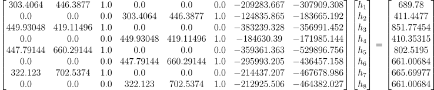

Part 1
Below are 2 examples of set images that we can wrap to form a larger combined image.
Part 2
To combine the images above, we can perform a projective transformation on one of the images such that it will match the other. Because the only change in amera position is rotation, we can compute a homography between 4 chosen points on 2 images that correspond to the same object. In the first example, we will choose the 4 points that maps to the rightmost window of the building.


Using the points
xy1, xy2, xy3, xy4, uv1, uv2, uv3, uv4 = (
(303.4064, 446.3877),
(449.93048, 419.11496),
(447.79144, 660.29144),
(322.123, 702.5374),
(689.78, 411.4477),
(851.77454, 410.35315),
(802.5195, 661.00684),
(665.69977, 661.00684)
)
we can obtain the system of equations

which produces the homography matrix
[[ 5.07543229e-01 -9.06493462e-02 4.94054627e+02]
[-5.71786088e-02 8.91384807e-01 -1.81376979e+01]
[-5.12480937e-04 8.13734006e-05 1.00000000e+00]]
Part 3
Given the following image: